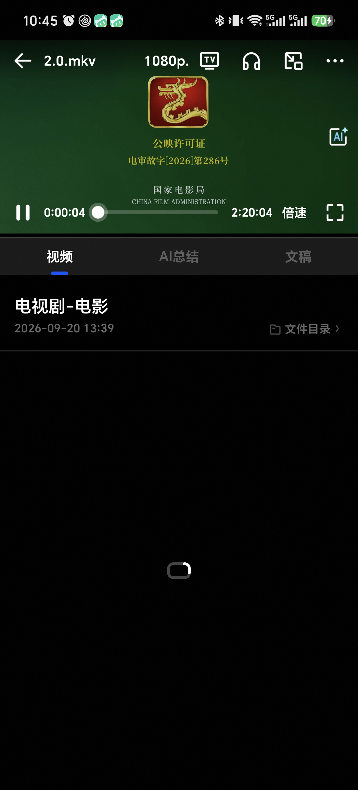
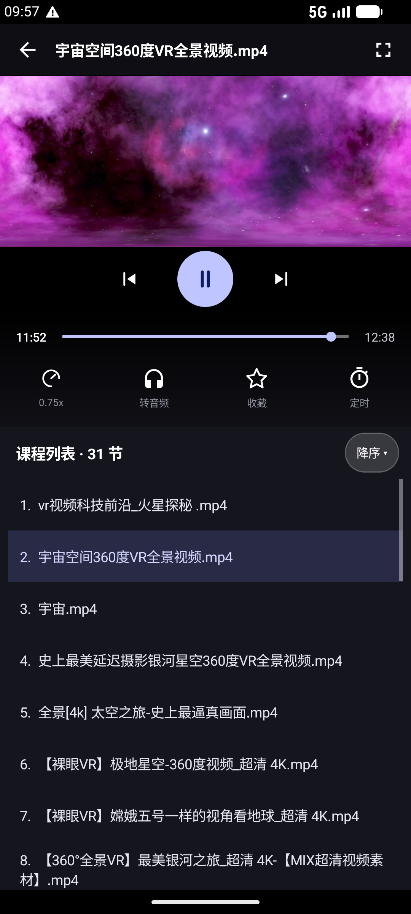
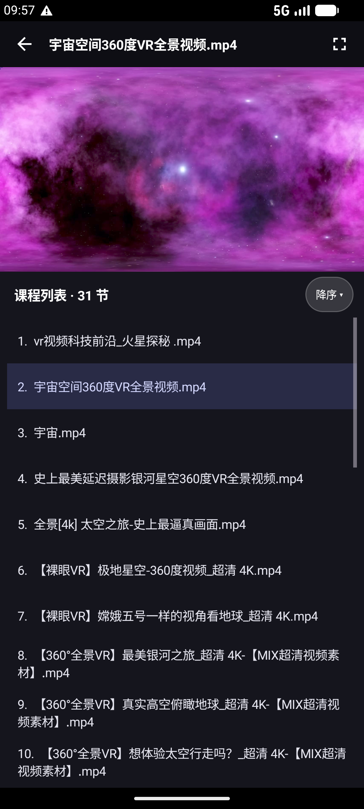
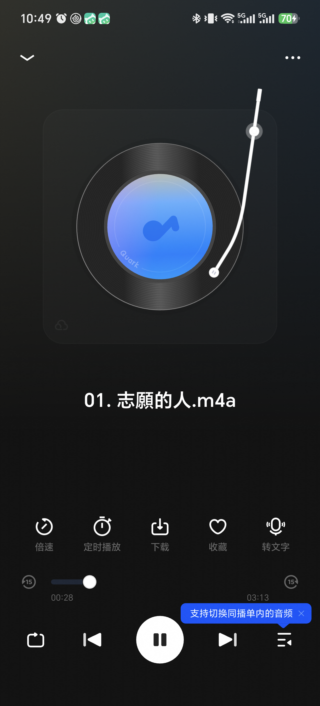
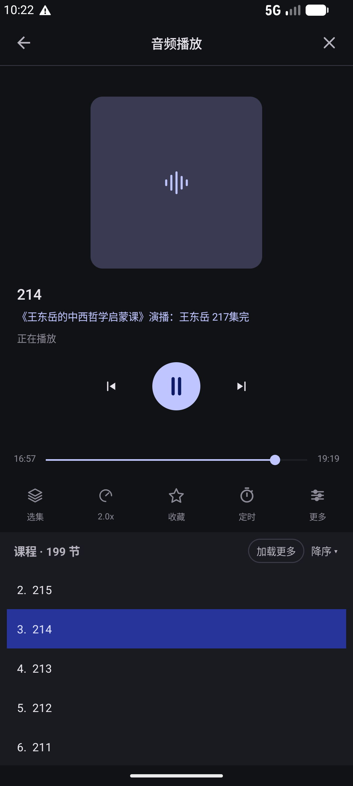

取自同一台真机（1224×2700）的夸克网盘实拍，对照我们刚改完的四槽版本。 只看布局结构，不谈配色与图标细节。结论：问题不在“不够整齐”，而在“层级太多、控制层太厚、没有视觉主体”。
⏸ 0:00:04 ── 轨道 ── 2:20:04 倍速 ⛶；我们是三行（浮层传输组 + 进度行 + 动作栏）。夸克：控制层显示态 + 默认态 ｜ 我们：控制层显示态（最新版）

1080p · TV · 耳机 · 字幕 · ···；默认态只剩一个 ←。

‹ ▶ › + 进度行 + 4 格动作栏（0.75x / 转音频 / 收藏 / 定时）。差距最大的一页：夸克是「纯播放页」，我们是「播放器 + 列表页」

⌄ 和 ···，没有标题、没有返回文字。−15 / +15；最底部是 5 件传输组（循环 / 上一 / 大白圆播放键 / 下一 / 列表）。
我们这一页还完全没动，是三页里改造成本最低、收益最直接的一页
河南省安阳市 / 2026.11.08 11:48，右侧 ···。原图 941KB 胶囊。| 维度 | 夸克真机 | 我们当前版本 |
|---|---|---|
| 页面性质 | 视频/图片是「文件详情页」，播放器/图片只是其中一个区块 | 视频/音频是全屏 Dialog 播放器，课程列表常驻 |
| 控制层厚度 | 视频 1 行；音频集中在底部一坨 | 视频 3 行；音频散在内容区 + 底部两处 |
| 信息密度 | 一屏一个主体 + 大留白，其余收进 Tab / 抽屉 / 更多 | 7～8 个等权区块同时可见 |
| 顶栏 | 透明 / 极简；视频 5 动作、音频只有 ⌄ 和 ···、图片两行标题 | 实色；视频返回+标题+全屏，音频返回+标题+停止，图片文字按钮 |
| 视觉主体 | 唱片动画 / 满屏画面 / 原图 | 静态波形方块 / 被列表挤压的画面 / 原图 |
| 播放键 | 音频底部大白圆，明显最大；视频在单行控制条左端 | 两者都是 56dp 居中，视觉权重不够 |
| 动作栏位置 | 音频在进度条上方，图片在底部 | 统一放在进度条下方（四槽规则） |
| 列表 | 默认不出现，靠「列表 / 选集」入口唤出 | 常驻，占 1/3 屏 |
| 选集项 | 缩略图 + 已观看% + 超清 + 时长 + 两行标题 | 纯文字行 + 底色高亮 |
| ±秒 | 音频进度条两端 −15 / +15（图标可见） | 长按上一/下一（不可见，藏起来了） |
删掉浮层传输组和 4 格动作栏，改成 ⏸ 时间 ─ 轨道 ─ 时长 倍速 ⛶ 单行；收藏 / 定时 / 转音频收进顶栏 ···。画面立刻变干净。
去掉常驻课程列表（改底部列表按钮上滑），删掉来源/状态两行，封面改圆形唱片，控制全部沉到底部，中间留白。这是最像夸克的一刀。
顶栏改透明 + 两行标题（文件名 / 3 of 9），加「原图 941KB」胶囊，底部 4 格动作栏（横屏 / 收藏 / 上一张 / 下一张）。
夸克截图：真机 ELP-AN00，1224×2700，2026-11-11 10:41–10:52 实拍。我们的截图：同项目最新版本（视频 / 音频已按四槽改造，图片页未改造）。本页只做布局结构诊断，未改动任何代码。